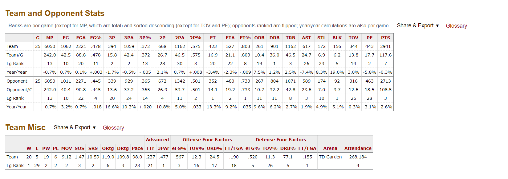
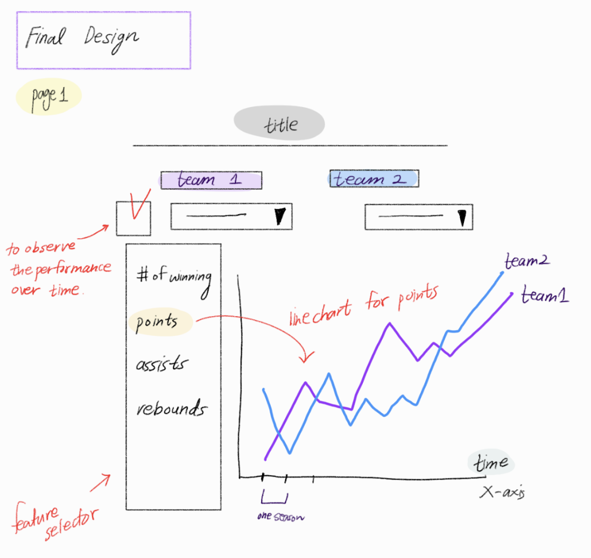
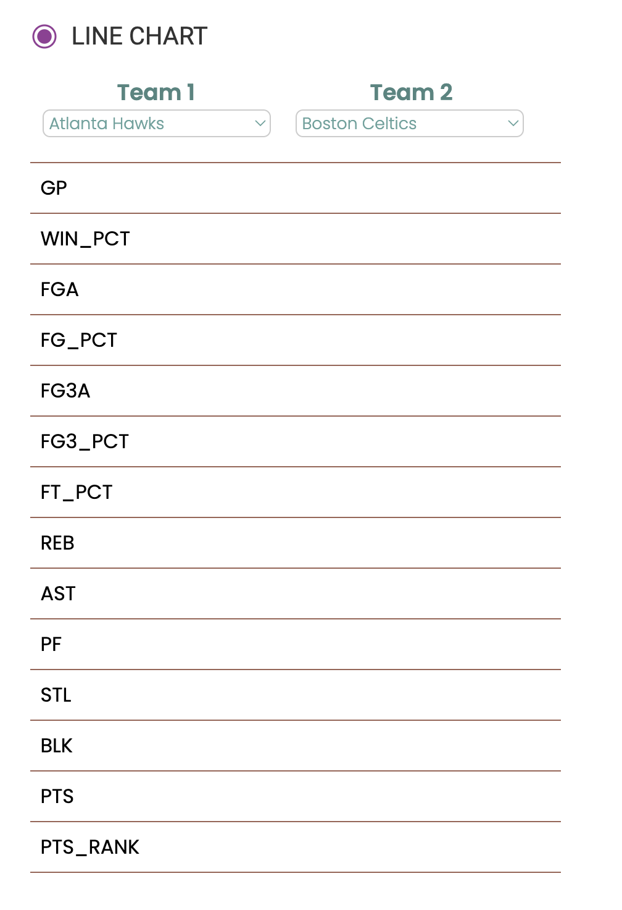
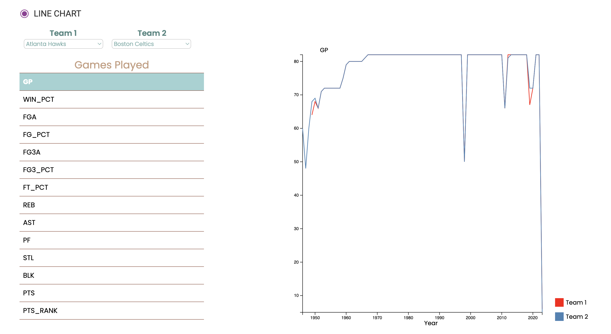
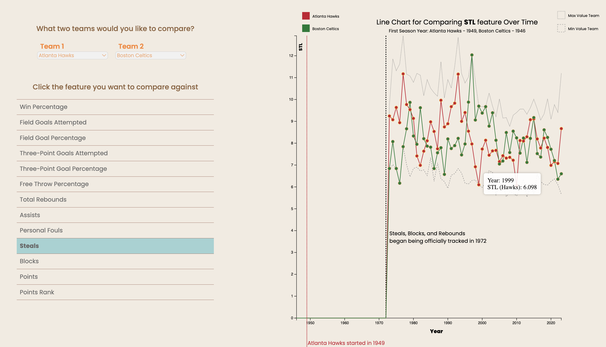
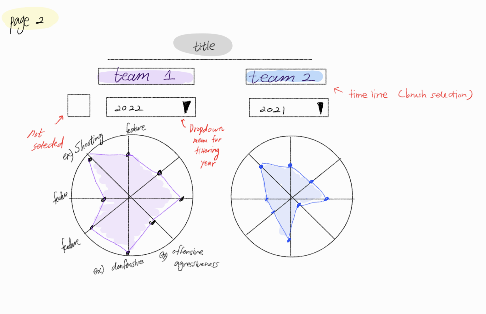
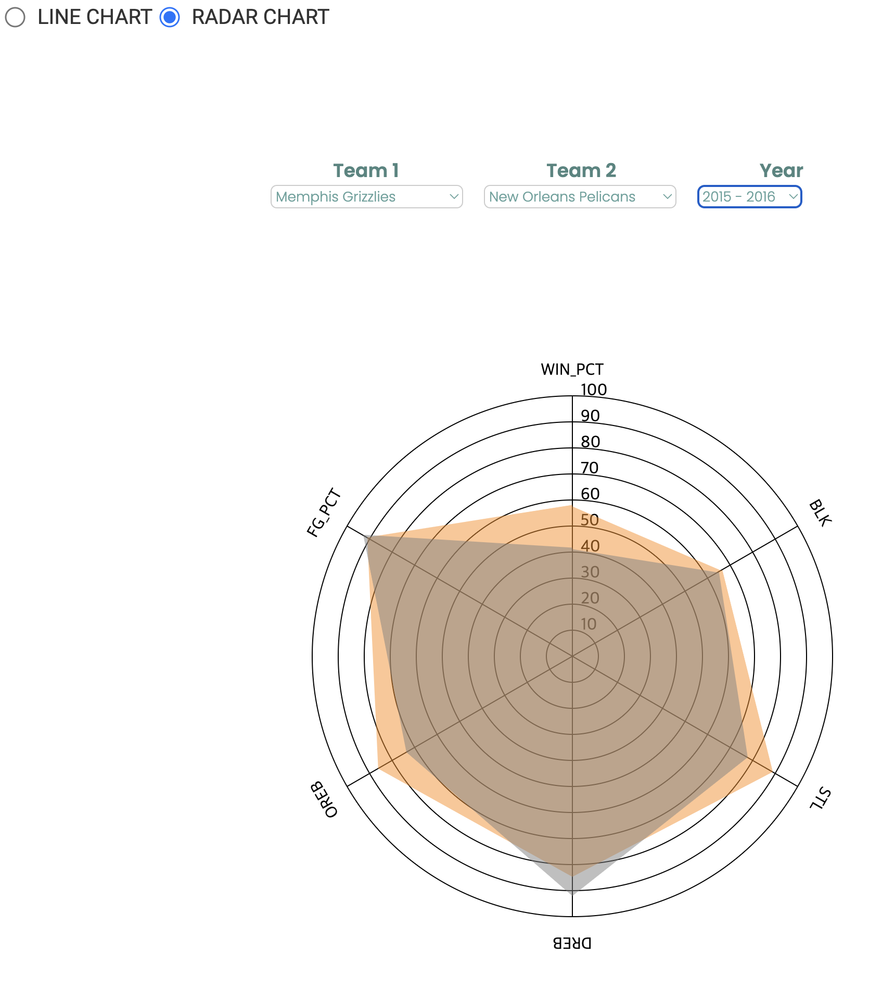
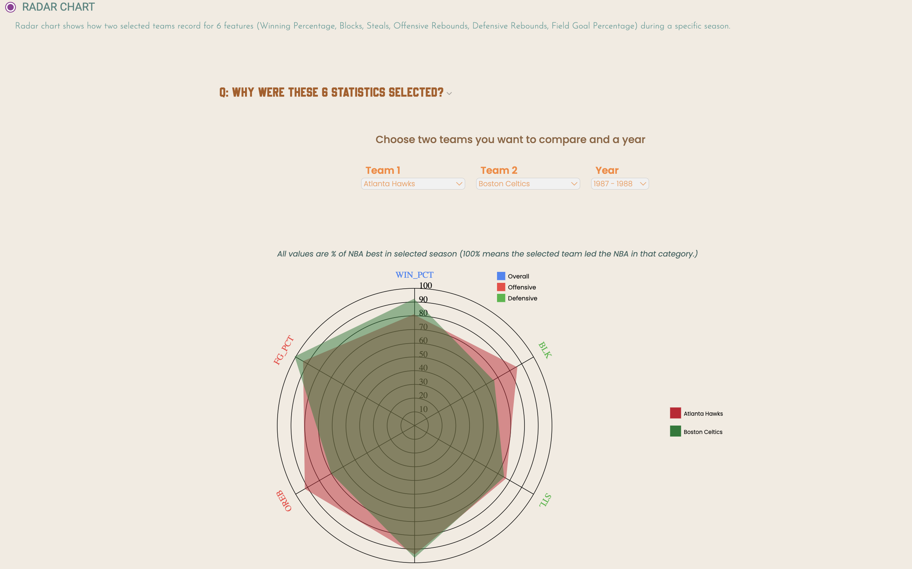

When we were thinking about what to make our project on, basketball came to mind quickly, because there is an immense amount of data to be used. However, many basketball statistical websites already exists. Mostly, these websites exist so a user can input one player or team, and get that player or team's statistics.
When looking at some of these other websites, we noticed two common issues that we wanted to solve. The first is that the data almost always made it difficult to compare directly between two teams. Team statistics, which are arguably even more important than player statistics because they correlate more with team wins, are often buried 6-7 clicks away on basketball websites. This means to compare two teams, one would need to open two separate windows, write down relevant statistics themselves, and then compare their written notes.
Not only is this a painful process for the user, it also leaves them with the task of deciding which data points are most important to compare. Often there are hundreds of statistical categories that are given equal relevance and space on the screen, and the user has to have the knowledge and ability to sift through all of them to pick the most important.
This leads us to the other common issue we wanted to solve- there are few, if any, NBA websites that are truly beginner friendly. If someone wants to get into this wonderful sport themselves, they would be completely lost on finding even the most basic information like which teams have been best throughout history. This is because that information is hidden behind abbreviations that a beginner wouldn't understand, and is difficult to determine numerically with no visuals.
So, we set out to make the most intuitive, beginnner friendly way for users to visually compare teams in key statistics over time. We chose these statistics so the beginner user doesn't have to, and we showed why those statistics are so important, as well as whether they are offensive or defensive measurements. Then, we used charts that would make for easy comparison. The line chart is great for comparison between two teams over time, and the radar is great for a snapshot of which team was better in a particular year for more granularity.
We were most inspired by BasketballReference (shown below) and ESPN's databases and approaches to showing NBA data to users. They do a great job of making data available for advanced users, and allowing people to see the numbers behind the sport they watch visually all the time. However, as mentioned before, these sites lack a strong visual component and are not the most beginner friendly, so we wanted to improve upon those aspects of their design. This led to a lot of simplification, because beginner users do not need to be overwhelmed with options, and can benefit from a more streamlined design.
We wanted to answer a few basketball related questions, but also importantly wanted any of our users to be able to answer these questions as well by using our site. These questions include: Have there been any teams that consistently dominate in the NBA? Have there been any teams that have been consistently bad? Among rivalry teams, who generally is better now? Is it the same team that was better before? How good are the winningest teams in key statistical categories compared to their peers?
First, we created a python file that fetches data from nba-api (documentation at https://github.com/swar/nba_api) and saves it into json files in the data_pre_processing folder which is not utilized post retrieval. This was done in the getdata.py python file. Then, since we are more familiar with csv files, we decided it to change each json to a csv.
In order to convert the data structures, we created a python file called jsonToCsv.py to get an output more comfortable to use.
Below are our final data files:
• teams.csv : has team name and the first year of season they played
• features.csv : Abbreviation, Explanation, and the last two columns are true if the feature is used in lineChart and radarChart, otherwise they are false.
• [TeamNames].csv : There are 30 files for team records where each file corresponds to each team.
In order to make features on radar charts more understandable, we processed 6 data features (Win Percentage, Blocks, Steals, Defensive Rebounds, Offensive Rebounds, Field Goal Percentage) to be relative to maximum value of teams during a selected season. We directly handled the data transformation in javascript file(radarChart.js) instead of creating new data fields.
To explore our data and answer the questions we proposed initially, as well as to inform our design better, we mostly used our own charts as we developed them. For example, when we first made our line chart, we tried to use that to see which team was better in a particular year between two set teams. This proved to be quite difficult, so we added a section with our radar chart to help us with those insights.
The line chart is used for rating how each team's performance has changed over many years when looking at two teams side by side. It relates to a team's season and will show a particular statistic for that season like points per game or rebounds. This is used to compare the trend over the entire lifetime of that team against another team.
We added feature selector for users to choose a specific feature and compare between two teams. Our initial design is shown below compared to that of our current design and implementation.
Later on, we added overlaying lines to show the maximum and minimum teams in each year for the selected statistic. This allows the user to frame their understanding of the data, and know how the teams stacked up against the best and worst. We also added vertical dashed lines to help the user see when data started being tracked, or when teams were created. This helps the user not be distracted by less useful data. We also added tooltips due to user feedback.
Initial Design
Milestone 2 Implementation
 Updated Implementation
The radar chart is used for comparing 6 features (Win Percentage, Blocks, Steals, Defensive Rebounds, Offensive Rebounds, Field Goal Percentage) of two teams. The radar chart shows how each team compares to other teams in the 6 features through a 6-pointed area. This is a particularly useful feature to have to compare various items at once in a different visualization. The value shown on charts is the percentage of the maximum for each stat in that year. For example, if the point for WIN_PCT of the team 1 for 2011-2012 is on 80, it means that the actual value of WIN_PCT for the team 1 is 0.8 * MAX({WIN_PCT values of all teams during 2011-2012})
We added a year selector for users to choose a specific season and compare 6 features between two teams. If one of teams did not exist at a certain year, that year is not shown on the year options. Also, instead of aligning two radar charts side by side, we overlayed two radar charts on top of each other to compare them quickly. Our initial design is shown below compared to that of our current design and implementation and progress from Milestone 2.
Initial Design
Milestone 2 Implementation
Updated Implementation
Summary
So, from our initial design that we created in the project proposal you can see many elements transfer to the implementation. You can see that the selector has radio buttons for chart types, and there is a selector where you can pick team 1 and team 2 in the design and the implementation. Furthermore, on the left of the line chart there is a feature selector where you can select any feature that you want to examine which is also consistent with the implementation. The line chart shows the performance of the two teams over the entire duration of each season for a particular feature. On the other hand, the radar chart displays the records of the two teams during a specific season.
We also added a legend. Although things are not completely the same as the design, we adjusted based on what we saw fit for the trajectory of the entire project from our initial thought process. Additionally, we added hover effects with tooltips to show the statistics of each team individually for more interactivity. This was based on user feedback.
As we went along with the charts, we did notice some interesting trends in our data. One was that teams do not tend to dominate constantly over a long time span. The best teams in the NBA still have long winning droughts where they rebuild and retool the team, then get back on top after a few years. The top teams are the ones that can keep these droughts short and their winning stretches long, like the Boston Celtics. Most teams also do not stay bad forever. A great example is the Golden State Warriors, who were the laughingstock of the NBA for years, then became multi-time champions in the mid 2010s.
As far as usability, our website does what it set out to do. In our user studies, users were able to answer direct questions about the league in general, and about specific teams. They were able to do this without direction to use specific features, indicating that it is intuitive to use the site and switch between the line chart view and the radar chart view. The best reassurance we got is that most people who interacted with the site had never really watched basketball, and by our estimation would not have understood a page like BasketballReference or ESPN. Therefore, we are proud of our work and feel like we accomplished what we set out to do. We could still improve the design by adding one or two more views without cluttering the page too much, or adding brushing on the line chart. Additionally, a companion site to compare players would be a nice logical extension of what we have done here.